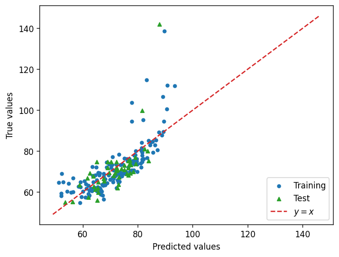
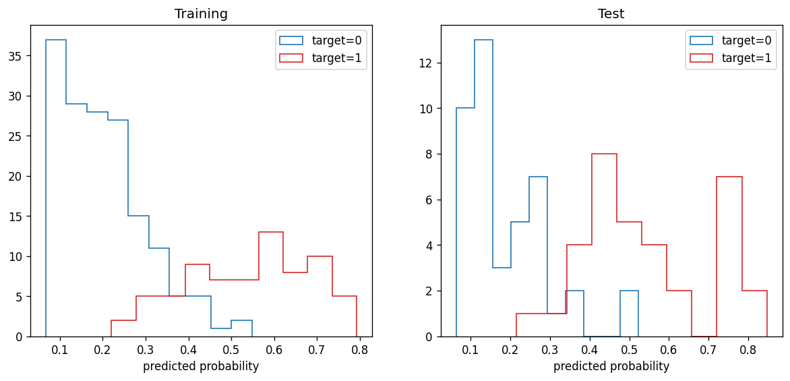
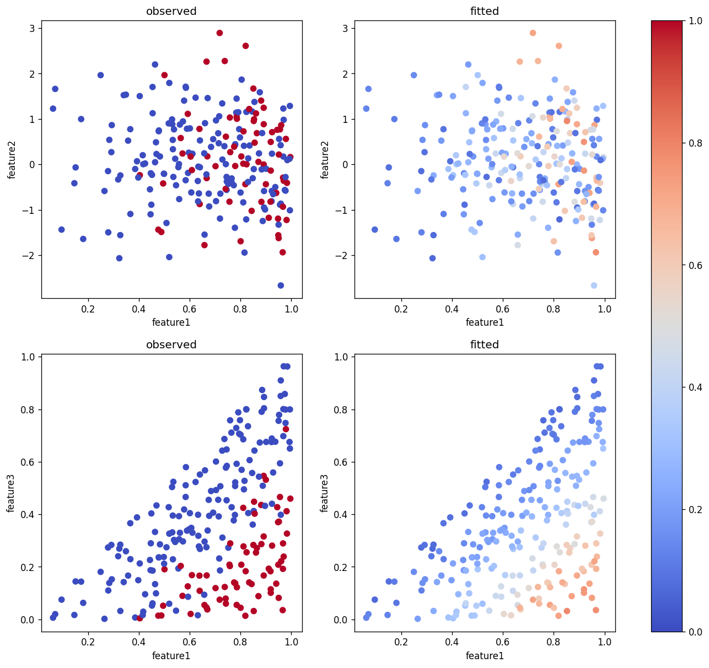

Lab 12: Regression I: Linear Models#
For the class on Monday, March 5th
import numpy as np
import matplotlib.pyplot as plt
import pandas as pd
from sklearn.model_selection import train_test_split
from sklearn.linear_model import LinearRegression, LogisticRegression
A. Linear Regression with Feature Transformation#
In this example, we can observe that a simple linear regression does not work very well. The reason is that the target value actually depends on some nonlinear functions of the features.
Note that we know this only because the data set was generated with known ground truths. In a real-world problem we would not even know this.
Our goal here is to identify proper feature transformation to make the linear regression work better.
A1. Simple Linear Regression#
df = pd.read_csv("https://yymao.github.io/phys7730/lab12a.csv")
df.head()
| feature1 | feature2 | target | |
|---|---|---|---|
| 0 | 183.498163 | 0.491170 | 73.575095 |
| 1 | 159.655403 | -5.744078 | 68.959186 |
| 2 | 128.886324 | 1.616083 | 68.938267 |
| 3 | 104.295157 | 0.510549 | 59.968115 |
| 4 | 197.365440 | -4.106682 | 74.827323 |
train_features, test_features, train_target, test_target = train_test_split(df[["feature1", "feature2"]], df["target"], test_size=0.25, random_state=123)
reg = LinearRegression()
reg.fit(train_features, train_target)
train_predict = reg.predict(train_features)
test_predict = reg.predict(test_features)
print(reg.coef_, reg.intercept_)
[0.17798778 3.70521238] 45.25839570233251
fig, ax = plt.subplots(dpi=120)
ax.scatter(train_predict, train_target, c="C0", s=15, label="Training")
ax.scatter(test_predict, test_target, c="C2", s=20, marker="^", label="Test")
# this complicated line is just for getting the values of the lower left and upper right corners of the plot
corners = np.diag(np.quantile(np.stack([ax.get_xlim(), ax.get_ylim()]), [0, 1], axis=0))
ax.plot(corners, corners, c="C3", ls="--", label="$y=x$")
ax.set_xlabel("Predicted values")
ax.set_ylabel("True values")
ax.legend(loc="lower right")
plt.show()
plt.close(fig)

📝 Questions (A1):
Discuss the plot above. How would you evaluate the performance of the model? In what ways does it fail?
// Write your answers to Part A1 here
A2. Feature Transformation#
In order to come up with some ideas to transform the features, we need to explore the data set a bit more and observe the trends.
🚀 Tasks (A2):
Similar to Lab 11, make some plots to explore the data set.
After you have those plots, propose some possible feature transformations.
Repeat the linear regression but with the transformed features.
# Add your implementation to explore the given data set here.
# Implement the feature transformations here.
train_features_transformed = np.stack([train_features["feature1"], train_features["feature2"]]).T
test_features_transformed = np.stack([test_features["feature1"], test_features["feature2"]]).T
# Repeat the linear regression process here.
📝 Questions (A2):
Does the feature transformation you applied help with the linear regression? How would you evaluate the result with feature transformation?
If you have much more features such that it becomes difficult to visually inspect their relationships, how would you come up with feature transformation in this case?
// Write your answers to Part A2 here
B. Logistic Regression#
In this example, we use logistic regression on a classification problem. The target has either a value of 0 or 1.
This problem can be thought of as a regression problem where we imagine there is a probability that decides whether the target is 0 or 1, and that probability depends on the features.
B1. With L2 penalty as regularization (default option)#
No code edits/changes needed in Part B1.
df = pd.read_csv("https://yymao.github.io/phys7730/lab12b.csv")
df.head()
| feature1 | feature2 | feature3 | target | |
|---|---|---|---|---|
| 0 | 0.823837 | 0.002049 | 0.255416 | 1 |
| 1 | 0.463884 | 0.048156 | 0.134220 | 0 |
| 2 | 0.891357 | 0.884391 | 0.167048 | 1 |
| 3 | 0.564873 | 0.580101 | 0.203385 | 1 |
| 4 | 0.993192 | -0.412869 | 0.957949 | 0 |
train_features, test_features, train_target, test_target = train_test_split(df.iloc[:,:3], df["target"], test_size=0.25, random_state=123)
reg = LogisticRegression()
reg.fit(train_features, train_target)
train_predict = reg.predict_proba(train_features)
test_predict = reg.predict_proba(test_features)
print(reg.coef_, reg.intercept_)
[[ 4.32390719 0.20046014 -4.42811441]] [-2.39770848]
fig, ax = plt.subplots(ncols=2, figsize=(12, 5), dpi=120)
ax[0].hist(train_predict[train_target==0,1], histtype="step", color="C0", label="target=0")
ax[0].hist(train_predict[train_target==1,1], histtype="step", color="C3", label="target=1")
ax[0].set_title("Training")
ax[0].set_xlabel("predicted probability")
ax[0].legend()
ax[1].hist(test_predict[test_target==0,1], histtype="step", color="C0", label="target=0")
ax[1].hist(test_predict[test_target==1,1], histtype="step", color="C3", label="target=1")
ax[1].set_title("Test")
ax[1].set_xlabel("predicted probability")
ax[1].legend()
plt.show()
plt.close(fig)

fig, ax = plt.subplots(nrows=2, ncols=2, figsize=(14, 12), dpi=120)
cs = ax[0,0].scatter(train_features["feature1"], train_features["feature2"], c=train_target, vmin=0, vmax=1, cmap="coolwarm")
cs = ax[0,1].scatter(train_features["feature1"], train_features["feature2"], c=train_predict[:,1], vmin=0, vmax=1, cmap="coolwarm")
ax[0,0].set_xlabel("feature1")
ax[0,1].set_xlabel("feature1")
ax[0,0].set_ylabel("feature2")
ax[0,1].set_ylabel("feature2")
ax[0,0].set_title("observed")
ax[0,1].set_title("fitted")
cs = ax[1,0].scatter(train_features["feature1"], train_features["feature3"], c=train_target, vmin=0, vmax=1, cmap="coolwarm")
cs = ax[1,1].scatter(train_features["feature1"], train_features["feature3"], c=train_predict[:,1], vmin=0, vmax=1, cmap="coolwarm")
ax[1,0].set_xlabel("feature1")
ax[1,1].set_xlabel("feature1")
ax[1,0].set_ylabel("feature3")
ax[1,1].set_ylabel("feature3")
ax[1,0].set_title("observed")
ax[1,1].set_title("fitted")
plt.colorbar(cs, ax=ax)
plt.show()
plt.close(fig)

📝 Questions (B1):
Briefly explain what these plots are showing.
Based on these plots, do you think the model gives a good fit to the data set?
// Write your answers to Part B1 here
B2. With no regularization#
🚀 Tasks
Repeat Part B1, but this time replace the line reg = LogisticRegression() with reg = LogisticRegression(penalty=None).
Note: you should copy the code cells from B1 rather than directly editing them, so that you can compare the plots between B1 and B2.
# Add your implementation for Part B2 here.
📝 Questions (B2):
Compare the results between B1 and B2. Which case gives you a better fit?
Does you answer agree your intuition? Explain briefly.
// Write your answers to Part B2 here
Tip
Submit your notebook
Follow these steps when you complete this lab and are ready to submit your work to Canvas:
Check that all your text answers, plots, and code are all properly displayed in this notebook.
Run the cell below.
Download the resulting HTML file
12.htmland then upload it to the corresponding assignment on Canvas.
!jupyter nbconvert --to html --embed-images 12.ipynb